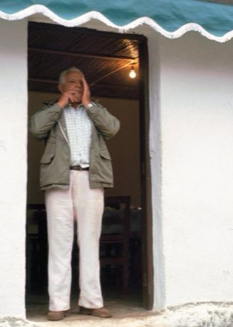
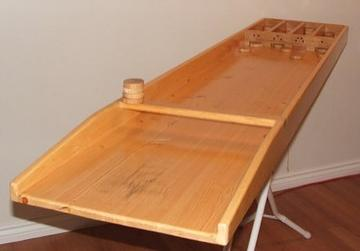
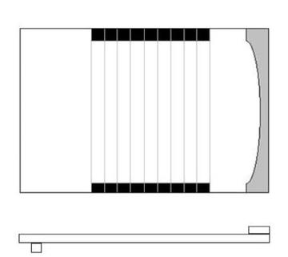
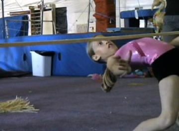

Home / Modern Heritage / Shared across the world
Encyclopedia ID 403
Whistled Language Relay
Silbo gomero


Listen to whistled pitch-glide patterns that stand for Spanish-sounding syllables and relay each message across the valley by repeating it exactly.
Heritage note
A tradition shared by communities in many places.
Origins
Usually placed in the era of Modern Heritage (1800 to today), although its exact origins are uncertain.
Sources
Related entries

Kingyo-sukui
Japan · Dexterity and skill games
Disc-flip
United Kingdom · Dexterity and skill games
Sjoelen
Netherlands · Dexterity and skill games
Shove ha'penny
United Kingdom · Dexterity and skill games
Limbo
Trinidad and Tobago · Dexterity and skill games
Daruma Otoshi
Japan · Puzzles and mind games